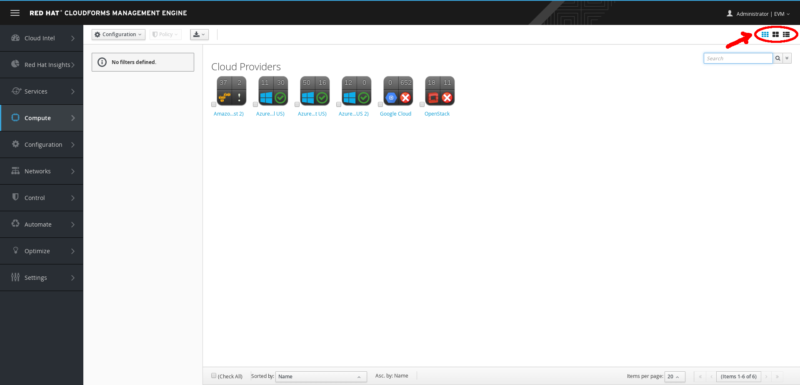

What's A Cloud Provider?
In Red Hat CloudForms, a cloud provider is a computing platform that manages instances and allows building of multi-tenant infrastructure services independent from underlying hypervisors.
Explore Cloud Providers
Select Compute → Clouds → Providers.

Cloud Providers
A list of your private and public cloud providers, such as OpenStack and Amazon EC2, appears.
To add Amazon EC2 or Microsoft Azure as a provider, use either (Configuration) and (Discover) or (Configuration) and (Add).
To add OpenStack or Google Compute Engine as a provider, you must use (Configuration) and (Add).
Explore the Virtual Thumbnail for Cloud Providers
The web interface uses virtual thumbnails to represent providers. Each thumbnail contains four quadrants by default, which display basic information about each provider.

Example Virtual Thumbnail
- The top left quadrant shows the number of instances defined in the provider.
- The top right quadrant shows the number of images available in the provider.
- The image in the bottom left quadrant represents the type of provider (only Amazon EC2 or OpenStack are shown).
- The bottom right quadrant shows the status of the provider.
- A (Policy) in the center indicates that this host has one or more policies applied.
In the top right corner of the window, click to toggle between Grid, Tile, and List views.

Top Window Navigation
Click (Download) to download a list of Cloud Proviers.

Download Cloud
Select the Amazon (US West 2) Amazon EC2 cloud provider.

Cloud Dashboard
Click the Relationships tab and review the kind of information CloudForms gathers from a provider.

Cloud Relationships
Return to the list of Cloud Providers… Select the OpenStack cloud provider and click the relationships to review the gathered information.